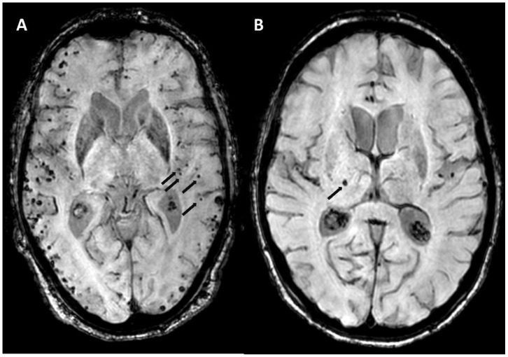
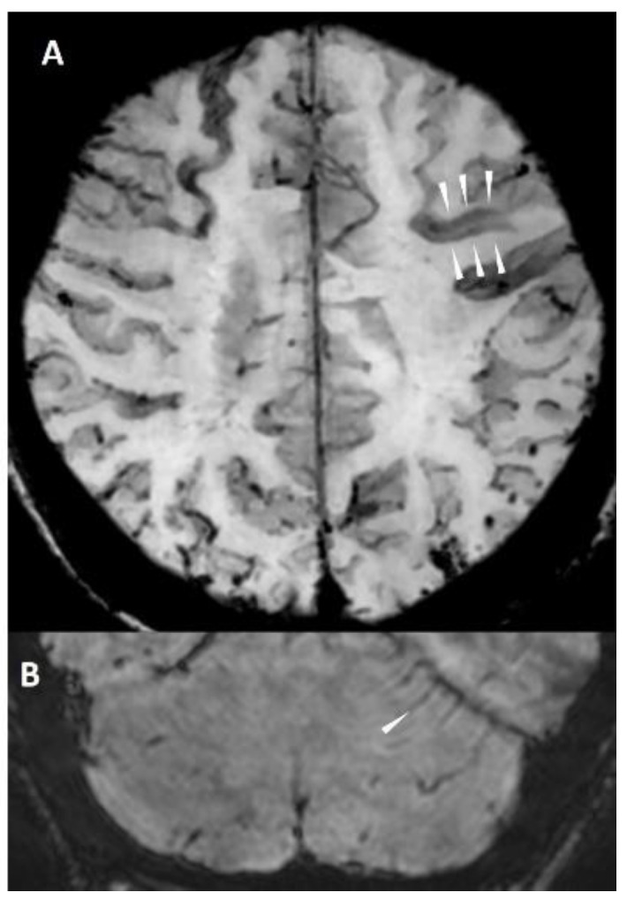
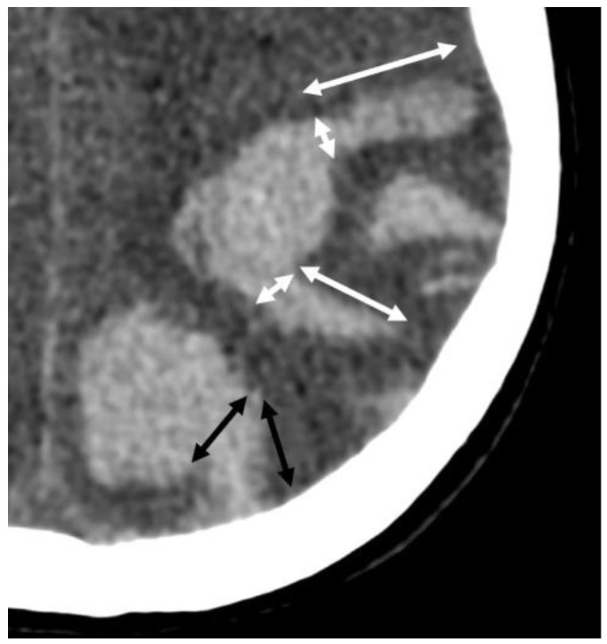
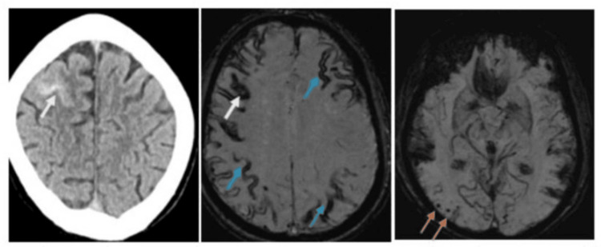
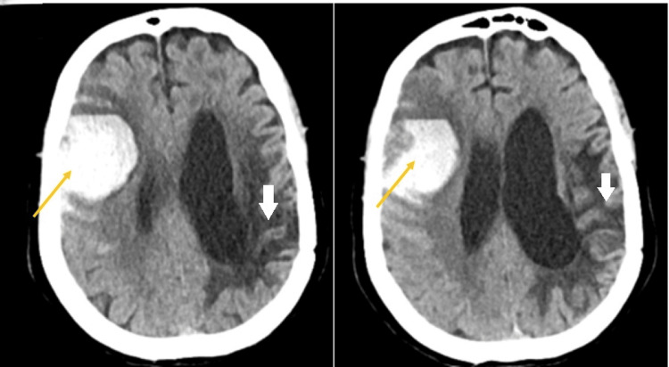

3027 — Xuất huyết nội sọ do bệnh mạch amyloid não (CAA) ở người già: thùy vs sâu, vi chảy máu, Boston 2.0 và quyết định dùng lại kháng đông hay LAAO
Tags: pattern:xuat-huyet-thuy pattern:vi-chay-mau-nao pattern:siderosis-vo-nao pattern:hao-mau-vo-nao vung:nao score:Boston-2.0 protocol:MRI-SWI protocol:CT-so-nao incidentaloma:vi-chay-mau
Mức chắc chắn (certainty): tổng hợp y văn (literature synthesis) — ghép nghiên cứu chẩn đoán Boston 2.0 (Lancet Neurol 2022, PMCID PMC9389452, trích abstract), tổng quan hình ảnh Boston 2.0 (Biomolecules 2024, PMC11592298), loạt 254 người sống sau xuất huyết thùy (Front Neurol 2026, PMC13021402), ca CAA có cSAH–cSS–vi chảy máu (Cureus 2026, PMC13060576), hướng dẫn dùng kháng đông/LAAO theo kiểu hình xuất huyết (J Cardiovasc Dev Dis 2026, PMC13027075; Cureus 2026, PMC13384533), PRESTIGE-AF và SoSTART (trích qua PMC13695321), CAA-ri (PMC13560943, PMC13562774) và loạt Medicare (Ann Neurol 2025, PMC12629278). Nhiều thiết kế khác nhau → không gắn nhãn ca nguyên văn.
Câu hỏi thực hành: bệnh nhân 78 tuổi, rung nhĩ, đang dùng apixaban, nhập viện vì xuất huyết thùy trán phải 30 mL. Câu hỏi không chỉ là “đảo ngược kháng đông” mà là: có nên dùng lại kháng đông không, hay chuyển sang đóng tiểu nhĩ trái (LAAO)? Câu trả lời phụ thuộc vào việc xuất huyết này là CAA hay bệnh mạch nhỏ tăng huyết áp — hai bệnh có nguy cơ tái phát chênh nhau hơn 7 lần. Bài chốt theo hai trục: (1) phân bố tổn thương (thùy vỏ não vs sâu/nhân nền) và (2) gánh nặng vi chảy máu + siderosis trên MRI. Nối 3025 – Đảo ngược kháng đông trong ICH, 212 – Xuất huyết sọ: ICH/SAH/SDH/EDH, 3022 – Chọc dò ở người dùng kháng đông, 201 – Protocol CT/MRI sọ não, 229 – PACNS vs RCVS.
1. Tổng quan bệnh học – cơ chế hình ảnh: vì sao amyloid chọn mạch VỎ NÃO và vì sao SWI nhìn thấy
- Bệnh học: trong bệnh mạch amyloid não (cerebral amyloid angiopathy — CAA), peptide β-amyloid (chủ yếu Aβ40) lắng đọng trong thành động mạch nhỏ và tiểu động mạch của vỏ não và màng mềm. Thành mạch dày lên, mất cơ trơn, tạo vi phình mạch và nứt thành → máu chảy vào nhu mô thùy não hoặc khoang dưới nhện vùng lồi (convexity subarachnoid hemorrhage — cSAH).
- TẠI SAO là “thùy” chứ không phải “sâu”: mạch bị amyloid là động mạch vỏ–màng mềm; các động mạch xuyên sâu (lenticulostriate, thalamoperforating) ít bị amyloid và là địa bàn của bệnh mạch nhỏ tăng huyết áp. Vì vậy vị trí xuất huyết/vi chảy máu phản ánh bệnh mạch nền: thùy = CAA, sâu (đồi thị, nhân nền, cầu não, tiểu não) = tăng huyết áp. Đây là lý do Boston 2.0 đòi “không có tổn thương chảy máu sâu” cho thể probable CAA.
- TẠI SAO SWI/GRE thấy vi chảy máu (cerebral microbleeds — CMB): sau chảy máu nhỏ, đại thực bào chuyển hemoglobin thành hemosiderin/ferritin — chất thuận từ mạnh (paramagnetic). Trường từ không đồng nhất làm T2 ngắn lại* → mất tín hiệu trên chuỗi T2* hoặc SWI. SWI dùng TE dài (20–25 ms) + lọc pha + MinIP 10 mm nên nhạy hơn GRE; hiệu ứng “blooming” làm tổn thương 2 mm trông to hơn, vì vậy phải đọc trên ảnh gốc và ảnh MinIP, tránh đo kích thước trên ảnh blooming.
- Ngưỡng định lượng:
- CMB: 2–10 mm, tròn/oval, giảm tín hiệu đồng nhất, không có phù xung quanh, không nằm trong rãnh (PMC11592298).
- Giãn khoang quanh mạch trung tâm bán bầu dục (centrum semiovale enlarged perivascular spaces — CSO-EPVS): cần > 20 ổ mỗi bán cầu để đủ tiêu chuẩn “đặc điểm chất trắng” của Boston 2.0 (PMC11592298).
- Tỷ lệ hiện diện các dấu hiệu trong một nhóm CAA: CSO-EPVS 56%, CMB 52%, cSS 49%, ICH 44% (PMC11592298).
- Xuất huyết não cấp trên CT: 50–80 HU, bờ không đều; ngón tay (finger-like projections) = máu chảy dọc rãnh, chiều dài > chiều rộng chân (PMC11592298).
- Dịch tễ và tiên lượng: trong 1.920.312 người thụ hưởng Medicare, CAA được chẩn đoán ở 11,3/10.000; CAA gắn với tử vong HR 4,9 (4,6–5,2), xuất huyết nội sọ HR 26,9 (20,3–35,6) và đột quỵ thiếu máu HR 4,6 (3,6–6,0) (PMC12629278). CAA là nguyên nhân thường gặp nhất của xuất huyết thùy ở người già (PMC11592298).
- Tái phát — con số quyết định điều trị: CAA tái phát 7,4–8,5%/năm, tăng lên 15–20%/năm khi có cSS lan tỏa nhiều ổ + nhiều CMB thùy; trong khi ICH không do CAA chỉ 1,1%/năm, ICH sâu do tăng huyết áp 0,6–1,1%/năm, mixed SVD ~1,8%/năm (PMC13027075). Một phân tích khác: xuất huyết thùy 5,1/100 bệnh nhân–năm so với sâu 1,8/100 bệnh nhân–năm, HR 3,2 (PMC13027075).
- Vì sao “càng nhiều dấu hiệu càng nguy”: trong 254 người sống sau xuất huyết thùy (trung vị 68,5 tuổi, 66,9% probable CAA), theo dõi trung vị 20 tháng có 20,9% tái phát; WMH dạng liên tục vùng sau (WMH-PC) aHR 2,55, cSS aHR 2,34, CSO-EPVS aHR 2,75; kết hợp WMH-PC + cSS aHR 3,16 (PMC13021402). Nghĩa là đếm và mô tả dấu hiệu thay đổi tiên lượng, không chỉ để “đủ tiêu chuẩn chẩn đoán”.
2. Mẫu hình + chẩn đoán phân biệt theo vị trí và bệnh mạch nền (gamut)
- Mẫu hình cốt lõi: người > 50 tuổi, xuất huyết thùy (vỏ–dưới vỏ), không tăng huyết áp nặng, kèm nhiều CMB thùy, cSS, cSAH vùng lồi, hoặc suy giảm nhận thức tiến triển.
- Gamut theo vị trí:
- Thùy vỏ não (CAA): CAA thể chảy máu; CAA thể viêm (CAA-ri); cSAH vùng lồi; bệnh mạch amyloid thể di truyền (APP, PSEN1/2 — thường khởi phát sớm); dị dạng mạch; u chảy máu; huyết khối xoang vỏ.
- Sâu (tăng huyết áp): đồi thị, nhân nền, cầu não, tiểu não; vi chảy máu sâu + lacune + EPVS vùng nhân nền.
- Mixed SVD: vừa sâu vừa thùy; tiên lượng tái phát trung gian ~1,8%/năm.
- Nhiều ổ / hai bán cầu: di căn chảy máu, thuyên tắc nhiễm khuẩn, rối loạn đông máu, CAA (nhiều ổ thùy).
- Gợi nhớ “LOBAR”: Lobar location, Older patient, Bleeding recurrence, Amyloid markers (CMB thùy, cSS), Rule out deep/other cause.
- Phân biệt với CAA-ri (thể viêm): đau đầu, rối loạn tri giác, co giật, phù chất trắng không đối xứng trên FLAIR, có thể choán chỗ giả u; đáp ứng corticoid. Đây là thể có thể hồi phục — bỏ sót dẫn tới sinh thiết/mổ vô ích.
- Phân biệt với cSAH do nguyên nhân khác: RCVS (đau đầu sét đánh, co mạch hồi phục), huyết khối xoang (đau đầu, tăng áp lực, thiếu máu tĩnh mạch), PRES, viêm nội tâm mạc (phình vi khuẩn), chấn thương.
3. Bảng so sánh phân biệt (ma trận đối chiếu)
| Thực thể (entity) | Hình ảnh điển hình | Chốt vào (rule-in) | Chốt loại (rule-out) | Gợi ý xác nhận |
|---|---|---|---|---|
| CAA (probable) | Xuất huyết thùy, nhiều CMB thùy, cSS, cSAH vùng lồi, CSO-EPVS > 20/bán cầu, WMH dạng multispot | ≥ 2 tổn thương chảy máu thùy (ICH/CMB/cSS/cSAH) hoặc 1 tổn thương thùy + 1 đặc điểm chất trắng, không có tổn thương sâu, tuổi > 50 | Có CMB/ICH sâu hoặc nguyên nhân khác rõ (AVM, u, huyết khối xoang) → không phải probable CAA | MRI 3T SWI/GRE + T2/FLAIR; áp dụng Boston 2.0; loại trừ nguyên nhân khác |
| Bệnh mạch nhỏ tăng huyết áp | ICH/CMB sâu (đồi thị, nhân nền, cầu não, tiểu não), lacune, EPVS nhân nền, WMH quanh não thất | CMB/ICH sâu + tăng huyết áp + không có CMB thùy | CMB thùy + cSS → nghĩ CAA, không quy cho tăng huyết áp | MRI SWI; kiểm soát huyết áp; đánh giá lại nếu tái phát thùy |
| Mixed SVD | Có cả tổn thương sâu và thùy | CMB/ICH vừa sâu vừa thùy | Chỉ một loại vị trí → không phải mixed | MRI SWI; tái phát ~1,8%/năm (PMC13027075) |
| ICH do kháng đông | Bất kỳ vị trí, thường thùy nếu có CAA nền; INR cao/DOAC | Đang dùng kháng đông + ICH | Không dùng kháng đông → không phải nhóm này; nhưng kháng đông KHÔNG loại trừ CAA | Hỏi thuốc + INR/anti-Xa; vẫn chụp MRI SWI sau khi ổn định |
| AVM / cavernoma | Thùy, vôi hóa, flow void, nidus ngấm thuốc; cavernoma có vòng hemosiderin | Bệnh nhân trẻ + nidus/flow void + không có CMB rải rác | Nhiều CMB thùy + cSS + tuổi già → CAA, không phải AVM | CTA/MRA/DSA; MRI T2*/SWI |
| U chảy máu (di căn, glioma) | Phù nhiều hơn ổ máu, ngấm thuốc vòng/nốt, nhiều ổ ở ranh giới chất trắng–vỏ | Phù không tương xứng + ngấm thuốc + nhiều ổ | Không phù, không ngấm thuốc, có CMB thùy rải rác → CAA | MRI có tương phản; PET/CT; sinh thiết nếu cần |
| CAA-ri (thể viêm) | Phù chất trắng không đối xứng, dạng lan tỏa hoặc nhiều ổ, có thể choán chỗ; kèm CMB thùy/cSS | Phù + dấu hiệu CAA + đau đầu/rối loạn tri giác/co giật | Không phù, không đáp ứng corticoid → nghĩ u/nhiễm trùng | MRI trước–sau corticoid; loại trừ nhiễm trùng/u |
| cSAH do RCVS | Máu dưới nhện vùng lồi, co mạch nhiều ổ trên CTA/MRA, hồi phục | Đau đầu sét đánh tái diễn + co mạch hồi phục + không có CMB thùy | cSS + nhiều CMB thùy ở người già → CAA | CTA/MRA lặp lại 1–3 tháng; MRI SWI |

(A) Nhiều vi chảy máu thùy (mũi tên đen) trên MRI định lượng từ (venBOLD, 3T, TE 25 ms, lát 1 mm) — kiểu CAA. (B) Một vi chảy máu sâu ở đồi thị (mũi tên đen) — kiểu bệnh mạch nhỏ tăng huyết áp. Nguồn: Biomolecules 2024 (PMC11592298), Figure 3, CC BY 4.0. Không crop.Ba dấu hiệu “đắt giá” trên MRI — đọc đúng để không chẩn đoán sai
- CMB thùy (lobar CMB): đếm theo vùng (thùy trán/đỉnh/thái dương/chẩm) và ghi có/không có CMB sâu. ≥ 2 CMB thùy đã đủ là một “tổn thương chảy máu” trong Boston 2.0; nhiều CMB + cSS là kiểu hình tái phát cao.
- cSS (cortical superficial siderosis): dải giảm tín hiệu cong theo bề mặt vỏ não, bám cả hai mặt rãnh — khác máu dưới nhện cấp (tăng tỷ trọng trên CT, tăng tín hiệu FLAIR) và khác máu tồn dư sau mổ. cSS rất đặc hiệu cho CAA và gắn với tăng nguy cơ tái phát (PMC11592298).
- cSAH vùng lồi: máu trong rãnh vùng lồi, không lan vào bể đáy, thường kèm cSS; ở người già cSAH + cSS + CMB thùy = CAA cho đến khi chứng minh ngược lại.

(A) Siderosis vỏ não (đầu mũi tên trắng) — dải giảm tín hiệu cong theo bề mặt vỏ, bám hai mặt rãnh; (B) siderosis hố sau theo lá tiểu não (đầu mũi tên trắng). Nguồn: Biomolecules 2024 (PMC11592298), Figure 5, CC BY 4.0. Không crop.4. Protocol chụp + hệ phân độ/điểm chuẩn hóa
4.1 Protocol hình ảnh cấp và bán cấp
- Cấp cứu: CT sọ không cản quang, lát mỏng 1 mm — xác định vị trí thùy/sâu, thể tích (ABC/2), máu vào não thất, dấu ngón tay, lan dưới nhện. Nếu bệnh nhân < 50 tuổi, không có tăng huyết áp, hoặc hình ảnh không điển hình → CTA tìm AVM/phình mạch/huyết khối xoang.
- MRI sau khi ổn định (24–72 giờ): 3T, tối thiểu SWI (hoặc T2* GRE), T2, FLAIR, DWI; thêm T1 sau tiêm nếu nghi u/CAA-ri. Thông số tham khảo trong bài gốc: SWI/venBOLD TE 25 ms, TR 18 ms, lát 1 mm, MinIP 10 mm; GRE 1,5T dùng TE 49 ms (PMC11592298).
- Đếm và ghi báo cáo: số CMB thùy và CMB sâu (theo bán cầu), cSS (khu trú/lan tỏa), cSAH, CSO-EPVS (có > 20/bán cầu không), WMH dạng multispot, lacune, vi chảy máu hố sau.
- CT đủ để nghi CAA không? Tiêu chuẩn Edinburgh trên CT (dấu ngón tay + lan dưới nhện ± APOE) có giá trị nhất định: trong loạt 53 ca phẫu thuật có đối chiếu mô bệnh học, AUC 0,76 (0,61–0,92); 15,4% (2/13) ca mô bệnh học âm tính vẫn bị xếp “khả năng CAA cao” theo CT (PMC12702237). Vì vậy CT chỉ để sàng lọc; MRI SWI mới là chốt.

Dấu ngón tay (mũi tên đôi trắng): chồi máu dài hơn chiều rộng chân nơi xuất phát từ ổ máu chính; thùy hóa (mũi tên đôi đen) có chiều rộng chân ≈ chiều dài. Đây là một trong các tiêu chuẩn CT của Edinburgh. Nguồn: Biomolecules 2024 (PMC11592298), Figure 9, CC BY 4.0. Không crop.4.2 Tiêu chuẩn Boston 2.0 (2022) — bản dùng trong bài
| Thể | Định nghĩa vận hành |
|---|---|
| CAA chắc chắn (definite) | Toàn bộ não sau mổ tử thi: có xuất huyết thùy/cSAH/suy giảm nhận thức + CAA nặng có bệnh mạch + không có tổn thương chẩn đoán khác |
| Probable CAA có bằng chứng mô bệnh | Bệnh cảnh lâm sàng phù hợp + mô bệnh học có CAA (máu tụ được lấy ra/sinh thiết vỏ não) + không có tổn thương khác |
| Probable CAA | Tuổi > 50, bệnh cảnh phù hợp, MRI có ≥ 2 tổn thương chảy máu thùy (ICH, CMB, cSS, cSAH) hoặc 1 tổn thương thùy + 1 đặc điểm chất trắng (CSO-EPVS hoặc WMH multispot), không có tổn thương chảy máu sâu, không có nguyên nhân khác |
| Possible CAA | Tuổi > 50, bệnh cảnh phù hợp, 1 tổn thương chảy máu thùy hoặc 1 đặc điểm chất trắng, không có nguyên nhân khác |
- Độ chính xác của Boston 2.0: độ nhạy 74,8% (65,4–82,7), độ đặc hiệu 84,6% (71,9–93,1) ở nhóm phát triển; 74,5%/95,0% ở nhóm có tử thi làm chuẩn; AUC 0,848 (0,794–0,901); so với Boston cũ (độ nhạy 64,5%, độ đặc hiệu 95,0%, AUC 0,798) (Lancet Neurol 2022, PMCID PMC9389452 — trích abstract).
- Cảnh báo quan trọng: ở 63 bệnh nhân Alzheimer có mô bệnh học, Boston 2.0 chỉ đạt độ nhạy 40,8% và độ đặc hiệu 64,2% cho probable CAA — tiêu chuẩn kém chính xác ở nhóm sa sút trí tuệ, nơi CAA thường gặp (PMC12779924). Không dùng “không đủ tiêu chuẩn” để loại trừ CAA ở người sa sút trí tuệ.
4.3 Phân tầng nguy cơ tái phát theo kiểu hình
| Kiểu hình | Nguy cơ tái phát/năm | Hàm ý điều trị |
|---|---|---|
| ICH sâu do tăng huyết áp | 0,6–1,1% | Kiểm soát huyết áp; cân nhắc dùng lại kháng đông nếu chỉ định mạnh |
| Mixed SVD | ~1,8% | Cá thể hóa; ưu tiên kiểm soát yếu tố nguy cơ |
| CAA (probable) | 7,4–8,5% | Rất thận trọng với kháng đông dài hạn; cân nhắc LAAO |
| CAA + cSS lan tỏa + nhiều CMB thùy | 15–20% | Tránh kháng đông dài hạn nếu có thể; LAAO/hội chẩn đa chuyên khoa |
| CAA + WMH-PC + cSS | aHR 3,16 so với không có | Theo dõi sát, tối ưu huyết áp, tránh té ngã |
4.4 Quyết định kháng đông – chống kết tập tiểu cầu – LAAO
- Nguyên tắc: không có “công thức” chung; quyết định theo kiểu hình xuất huyết + nguy cơ huyết khối + nguyện vọng bệnh nhân, có hội chẩn.
- Bằng chứng mới (2025–2026):
- PRESTIGE-AF: ở bệnh nhân ICH + rung nhĩ, DOAC giảm đột quỵ thiếu máu mạnh (HR 0,05; 0,01–0,36; 0,83 so với 8,60/100 bệnh nhân–năm) nhưng tái phát ICH HR 10,89 (90% CI 1,95–60,72) — không đạt tiêu chuẩn không thua kém (PMC13695321).
- SoSTART: dùng lại kháng đông sau ICH có tái phát ICH 8% so với 4% ở nhóm không dùng lại (PMC13027075).
- Hệ quả: với CAA thể tái phát cao (cSS lan tỏa/nhiều CMB), lợi ích phòng huyết khối phải cân rất nặng với nguy cơ chảy máu; LAAO là lựa chọn thay thế nhưng không miễn nhiễm rủi ro.
- LAAO — con số cần biết:
- Ở bệnh nhân rung nhĩ đã có biến cố huyết khối dù đang kháng đông, LAAO so với tiếp tục kháng đông: đột quỵ thiếu máu 2,8 so với 8,9/100 bệnh nhân–năm, HR 0,33 (0,19–0,58) (nghiên cứu STR-OAC, 433 ca) (PMC13027075).
- Biến chứng thủ thuật thường gặp: tràn dịch màng tim ~2,5–2,7%, biến chứng mạch vào ~2,5%; sau thủ thuật vẫn cần kháng kết tập/kháng đông ngắn hạn (PMC13027075).
- Chưa có RCT riêng cho CAA: các thử nghiệm COMPARE LAAO và STROKE CLOSE đang chạy nhưng không chọn riêng CAA (PMC13027075). Vì vậy LAAO ở CAA là quyết định cá thể hóa, không phải chỉ định chuẩn.
- Thực hành đề xuất:
- CAA + cSS lan tỏa/nhiều CMB + rung nhĩ: ưu tiên LAAO hoặc không kháng đông dài hạn, thảo luận với tim mạch.
- CAA + 1 ổ thùy đơn độc, không cSS, không nhiều CMB: có thể cân nhắc DOAC nếu nguy cơ huyết khối cao, sau khi kiểm soát huyết áp và có đồng thuận.
- Không dùng kháng kết tập tiểu cầu “cho chắc” khi không có chỉ định mạch vành/đột quỵ thiếu máu — làm tăng nguy cơ chảy máu mà không có lợi ích rõ.
- Kiểm soát huyết áp là can thiệp nền tảng; tránh rượu nhiều, té ngã, chấn thương đầu.
4.5 CAA thể viêm (CAA-ri) — điều trị và theo dõi
- Nhận diện: đau đầu, rối loạn tri giác, co giật, khiếm khuyết khu trú + phù chất trắng không đối xứng trên FLAIR, kèm dấu hiệu CAA. Loại trừ nhiễm trùng, u, bệnh mạch máu.
- Corticoid sớm: khởi trị trong vòng 6 tuần kể từ khởi phát gắn với kết cục chức năng tốt hơn (OR 0,14; 0,03–0,58) và giảm phù (OR 0,13; 0,04–0,45) so với khởi trị muộn (PMC13560943).
- Tái phát: 22,4% / 26,3% / 44,0% ở 6 / 12 / 24 tháng; phù lan tỏa (≥ 4 vùng) là yếu tố dự báo mạnh (HR 12,26; 1,95–76,94); mycophenolate gợi ý giảm tái phát nhưng chưa có ý nghĩa (HR 0,36; 0,07–1,09) (PMC13562774).
- Thời gian corticoid: trong loạt trên, trung vị giảm liều 4,5 tháng; theo dõi MRI để phát hiện tái phát sau khi giảm liều, không chỉ trong đợt cấp.
flowchart TD
A["Xuất huyết thùy não ở người trên 50 tuổi"] --> B["CT sọ không cản quang lát 1 mm<br/>thể tích, máu não thất, dấu ngón tay"]
B --> C{"Tuổi dưới 50<br/>hoặc hình ảnh không điển hình?"}
C -->|Có| D["CTA/MRA/DSA<br/>tìm AVM, phình mạch, huyết khối xoang"]
C -->|Không| E["MRI 3T: SWI/GRE, T2, FLAIR, DWI"]
E --> F{"Có tổn thương chảy máu SÂU?"}
F -->|Có| G["Bệnh mạch nhỏ tăng huyết áp<br/>hoặc mixed SVD"]
F -->|Không| H{"Đủ Boston 2.0 probable CAA?"}
H -->|Có| I["CAA: phân tầng theo cSS, số CMB, WMH-PC"]
H -->|Không| J["Possible CAA hoặc nguyên nhân khác<br/>theo dõi và chụp lại"]
I --> K{"Rung nhĩ / chỉ định kháng đông?"}
K -->|Không| L["Kiểm soát huyết áp, phòng té ngã"]
K -->|Có, nguy cơ cao| M["Hội chẩn: LAAO hoặc không kháng đông dài hạn"]
K -->|Có, nguy cơ trung bình| N["Cân nhắc DOAC<br/>sau kiểm soát huyết áp"]
5. Biến thể bình thường và cạm bẫy
- Biến thể bình thường / giả tổn thương:
- CMB đơn độc ở người rất già có thể gặp mà không có CAA lan tỏa; không chẩn đoán CAA chỉ vì một CMB.
- Dải giảm tín hiệu ở rãnh do mạch máu chảy chậm (flow void) — không phải cSS; cSS bám hai mặt rãnh và theo bề mặt vỏ.
- Vôi hóa mạch mạc treo/tuyến tùng và khí nội sọ đều giảm tín hiệu trên SWI — đọc kèm CT và ảnh phase.
- Máu tồn dư sau mổ/chấn thương có thể giống cSS khu trú; hỏi tiền sử và so phim cũ.
- Cạm bẫy chết người:
- Gọi mọi xuất huyết thùy ở người già là CAA mà không chụp MRI — Boston 2.0 cần ≥ 2 tổn thương thùy hoặc 1 + đặc điểm chất trắng; thiếu MRI dễ bỏ sót AVM/u/huyết khối xoang ở người trẻ hơn.
- Bỏ qua CMB sâu — chỉ cần một CMB/ICH sâu là không đủ tiêu chuẩn probable CAA; quyết định kháng đông có thể khác hẳn.
- Tin “Boston âm tính = không CAA” — ở bệnh nhân Alzheimer, độ nhạy chỉ 40,8% (PMC12779924).
- Không đếm CMB/cSS — cSS lan tỏa + nhiều CMB đẩy nguy cơ tái phát lên 15–20%/năm, gấp đôi nhóm CAA thông thường.
- Dùng kháng đông dài hạn “vì rung nhĩ” mà không hội chẩn — PRESTIGE-AF cho HR tái phát ICH 10,89, dù giảm đột quỵ thiếu máu rất mạnh.
- Cho rằng LAAO là “không cần thuốc” — sau LAAO vẫn cần kháng kết tập/kháng đông ngắn hạn, và có biến chứng thủ thuật ~2,5–2,7%.
- Bỏ sót CAA-ri — phù chất trắng không đối xứng hồi phục được với corticoid; nếu nghĩ u và sinh thiết/mổ, bệnh nhân mất cơ hội điều trị nội khoa.
- Đo kích thước CMB trên ảnh MinIP/blooming — hiệu ứng blooming làm tổn thương to hơn thật; đo trên ảnh gốc, và phân biệt với vôi hóa, khí, kim loại.
6. Tự lượng giá — Blind Quiz
Ca 1 — Nam 72 tuổi, đau đầu nhẹ đột ngột, CT không cản quang có máu rãnh vùng lồi bán cầu phải. Nhìn 3 ô ảnh, mô tả trước khi mở đáp án.

- Câu hỏi: (a) Dấu hiệu trên CT (ô trái) là gì? (b) Hai dấu hiệu trên MRI (ô giữa và phải) là gì? (c) Bộ ba này gợi ý bệnh gì, và vì sao không phải xuất huyết dưới nhện do vỡ phình?
Bấm để hiện đáp án
- (a) Máu dưới nhện vùng lồi (cSAH) — tăng tỷ trọng trong rãnh vùng lồi, không lan vào bể đáy (mũi tên trắng).
- (b) Ô giữa: siderosis vỏ não (cSS) — dải giảm tín hiệu bám bề mặt vỏ não (mũi tên xanh); ô phải: nhiều vi chảy máu thùy (mũi tên cam).
- (c) CAA — bộ ba cSAH + cSS + nhiều CMB thùy ở người già là kiểu hình CAA điển hình, đủ ≥ 2 tổn thương chảy máu thùy cho probable CAA nếu không có tổn thương sâu và không có nguyên nhân khác. Không phải vỡ phình mạch vì cSAH khu trú vùng lồi, không có máu bể đáy, và có cSS/CMB — dấu hiệu bệnh mạch nhỏ nền, không phải túi phình.
- Nguồn ảnh: Cureus 2026 (PMC13060576), Figure 1 — CC BY 4.0.
Ca 2 — Nữ 78 tuổi, tiền sử xuất huyết thùy trái 2 năm trước. Nay đau đầu, CT mới. Nhìn 2 ô CT, xác định tổn thương mới và dấu hiệu nền.

- Câu hỏi: (a) Ổ máu mới nằm ở đâu, và dấu hiệu nào cho biết đã có xuất huyết cũ? (b) Vì sao bệnh nhân này không nên dùng lại kháng đông dài hạn nếu không có chỉ định bắt buộc? (c) Cần bổ sung chuỗi xung nào để chốt nguy cơ?
Bấm để hiện đáp án
- (a) Xuất huyết thùy trán–thái dương phải (mũi tên vàng) — ổ tăng tỷ trọng lớn, bờ không đều; vùng giảm tỷ trọng và giãn não thất bên trái (mũi tên trắng) là di chứng xuất huyết cũ/hoại tử não.
- (b) Vì tái phát thùy ở người già gần như chắc chắn là CAA, với nguy cơ tái phát 7,4–8,5%/năm, tăng 15–20%/năm nếu có cSS lan tỏa + nhiều CMB; dùng lại kháng đông làm tăng nguy cơ này (PRESTIGE-AF: HR tái phát ICH 10,89). Nếu có rung nhĩ, LAAO là lựa chọn thay thế cần hội chẩn.
- (c) MRI 3T SWI/GRE + T2/FLAIR/DWI để đếm CMB thùy, tìm cSS, cSAH, CSO-EPVS, và loại trừ AVM/u; nếu có phù không đối xứng → nghĩ CAA-ri.
- Nguồn ảnh: Cureus 2026 (PMC13060576), Figure 3 — CC BY 4.0.
Bài liên quan chéo
- 3025 – Đảo ngược kháng đông trong xuất huyết nội sọ cấp (bước trước: cầm máu và đảo ngược)
- 212 – Xuất huyết sọ: ICH/SAH/SDH/EDH (nền tảng phân biệt 4 loại chảy máu)
- 3022 – Chọc dò tủy sống ở người dùng kháng đông (ngưỡng INR/DOAC và máu tụ)
- 201 – Protocol CT/MRI sọ não (chọn chuỗi xung, thời điểm chụp)
- 229 – PACNS vs RCVS (cSAH và co mạch — phân biệt với CAA)
- 3018 – Tăng áp lực nội sọ tự phát (đau đầu + phù gai — DDx ở người già)
Ảnh
3027_vi-chay-mau-thuy_MRI-PMC11592298-F3.jpg— nhiều CMB thùy (A) so với một CMB sâu đồi thị (B), Biomolecules 2024 (PMC11592298), Figure 3, CC BY 4.0.3027_siderosis-vo-nao_MRI-PMC11592298-F5.jpg— siderosis vỏ não và siderosis hố sau, Biomolecules 2024 (PMC11592298), Figure 5, CC BY 4.0.3027_ngon-tay_CT-PMC11592298-F9.jpg— dấu ngón tay trên CT (tiêu chuẩn Edinburgh), Biomolecules 2024 (PMC11592298), Figure 9, CC BY 4.0.3027_csah-css-vi-chay-mau_MRI-PMC13060576-F1.jpg— cSAH + cSS + nhiều CMB thùy, Cureus 2026 (PMC13060576), Figure 1, CC BY 4.0.3027_tai-phat-thuy_CT-PMC13060576-F3.jpg— xuất huyết thùy tái phát, Cureus 2026 (PMC13060576), Figure 3, CC BY 4.0.- Nguồn + giấy phép từng ảnh:
images/CREDITS.md.
Không dùng để chẩn đoán độc lập khi chưa có người hướng dẫn.